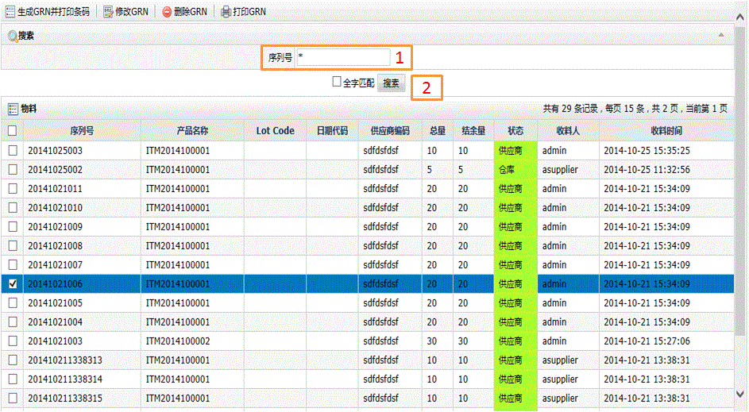
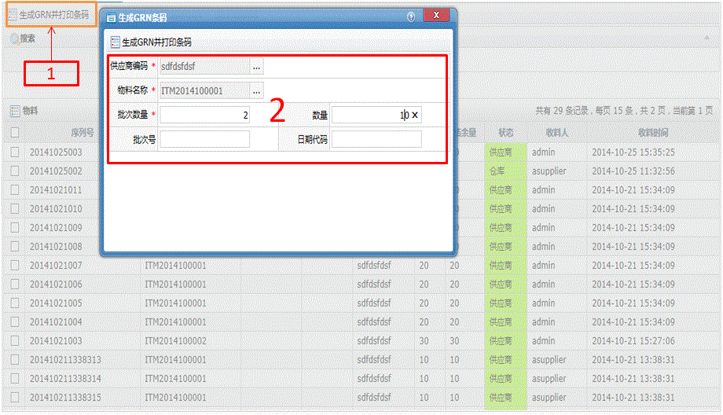

物料
字段描述
字段名
描述
序列号
物料条码
产品名称
物料代码
LotCode
批号
日期代码
日期代码
供应商编码
供应商代码
总量
总数量
结余量
剩余数量
状态
物料位置
收料人
物料接收人员
收料时间
物料收料时间
批次数量
批次打印物料GRN时的数量
功能描述
可执行查询物料、生成物料条码、修改物料信息、删除物料信息、打印物料条码功能
查询物料
1.输入物料的序列号GRN或关键字；
2.点击搜索按钮后列表显示结果。

生成GRN并打印条码
1.主页面中单击生成GRN并打印条码按钮；
2.在弹出的窗口中输入相关的信息，带*号为必输项；
3.最后单击生成GRN条码并打印按钮，即可完成物料GRN条码打印。

修改GRN
1.主页面中先选择所需GRN，然后单击工具栏上的修改按钮；
2.在弹出的窗口中输入要修改的相关信息后点击保存。
删除GRN
1.主页面中先选择所需GRN，然后单击工具栏上的删除按钮；
2.在弹出的窗口中确认后完成或取消操作。
打印GRN
1.主页面中先选择所需GRN，然后单击工具栏上的打印GRN按钮；
2.在弹出的打印窗口中确认后点击打印即可。